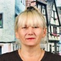

Дошкольное отделение школы № 1423
В 2015 году 50% первоклассников Школы № 1423 пришли из дошкольного отделения.
- Перервинский бульвар, 5к2
- Белореченская улица, 26к2
Воспитатели
Воспитатели, которых чаще всего благодарят родители (отзывы и профили сотрудников взяты с официального сайта школы):|

Воспитатель
Насрудинова Вера Ивановна
1 благодарность |
Тимушкова Светлана Анатольевна
1 благодарность |
Старший воспитатель
Дегтярева Марина Васильевна
1 благодарность |
Отзывы
Данные собраны c официального сайта школы и через форму для отзывов.
Уважаемая Марина Васильевна! Родительский коллектив 1-й группы "Сказка" 2-го дошкольного отделения сердечно поздравляет Вас с Международным женским днем! И хотим поблагодарить Вас, как руководителя дошкольного отделения, за создание уюта, доброжелательности, тепла в детском саду! Спасибо Вам! Желаем Вам добра, здоровья, благополучия, удачи, вдохновения и сил для работы в любимом нашем саду! Родительский коллектив группы "Сказка".
Уважаемые, добрейшие воспитатели наших любимых деток- Ли Людмила Михайловна, Насрудинова Вера Ивановна, Косова Ирина Александровна! Вы, как никто другой, достойны самых искренних поздравлений в Международный женский день! Мы, родители 1-й младшей группы "Сказка" 2-го дошкольного отделения, рады, что наши дети пребывают в атмосфере любви и понимания! В этот день мы хотим выразить Вам свою глубокую признательность за вашу доброту, терпение, внимание к нашим детям. Пусть этот весенний день подарит Вам немало добрых и ласковых слов, подарков от чистого сердца, здоровья и личного счастья!!! С любовью и благодарностью, родительский коллектив группы "Сказка".
26 сентября 2014 родительский комитет дошкольного отделения № 1 - просьба разместить на сайте школы rodkom3@yandex.ru вопрос №4165 Уважаемая Светлана Анатольевна, педагоги, сотрудники и работники нашего дошкольного отделения ГБОУ СОШ № 1423! От имени всех родителей нашего дошкольного учреждения сердечно поздравляем Вас с профессиональным праздником – Днем дошкольного работника! В наше нелегкое время, время перемен и новых изменений, хотим выразить Вам большую благодарность за работу, которая проводится каждым сотрудником нашего детского сада. С вашей помощью, дорогие педагоги, дети начинают познавать мир, приобретают первые навыки и умения, учатся жить в коллективе и быть внимательными к окружающим. Уважаемые воспитатели и работники нашего дошкольного отделения, выражаем ваш большую признательность за преданность делу, которому вы служите, за искреннюю любовь и заинтересованное внимание к детям, которых вы воспитываете, за душевную теплоту и щедрость, которые вы дарите самым маленьким жителям нашего города. Желаем Вам крепкого здоровья, счастья, оптимизма и успехов во всех добрых начинаниях! Родительский комитет дошкольного отделения ГБОУ СOШ № 1423 Направлено на: director@school1423.ru
Если вы нашли ошибку или неточность, пожалуйста, сообщите нам об этом.
Ученик, выпускник или родитель? Оставьте отзыв о детском саде.